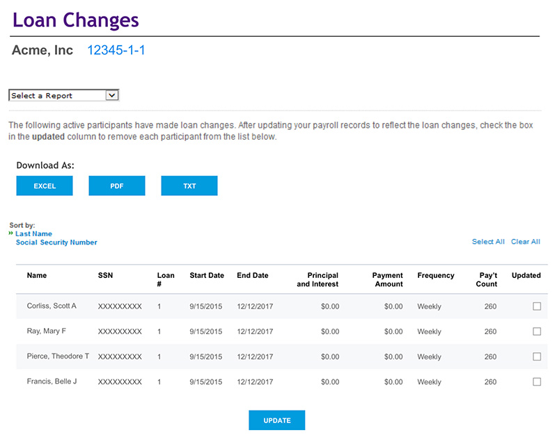
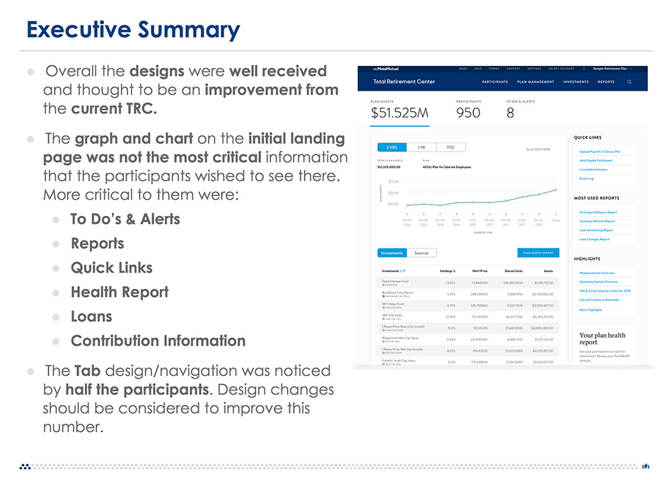
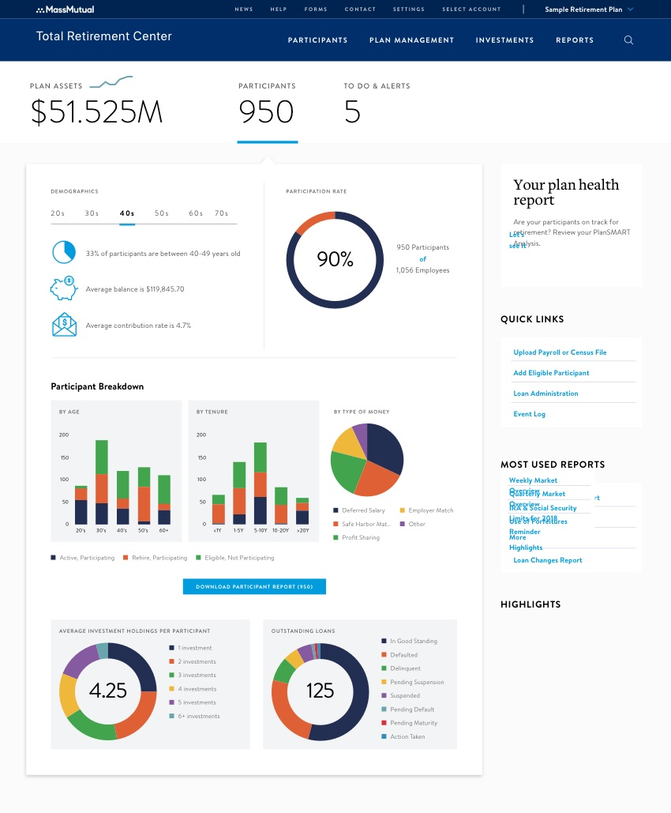

MassMutual's Total Retirement Center (demo) allows a company's Human Resources Department to manage its 401(k) and/or pension plans.
With the exception of minor compliance updates, the TRC had not been prioritized for a redesign since its launch in 1999. The company's sales team were losing contracts to competitors and the massive account management team dedicated to assisting Plan Sponsors were spending most of their time putting out fires instead of building relationships with their clients.
The dashboard especially, being the most visited page, looks outdated; and based on our research, did not focus on the most important elements for users.
Sanchit Gupta and I paired up with the task of creating a long-term strategy to launch a "Next-Gen TRC." We were given eight weeks to: completely understand the space; review documentation, including years of compiled feature requests; and interview users (internally & externally).
Competitors aren't always forthcoming when it comes to sharing their equivalent tools. The proprietary information and sensitive user data creates a unique challenge when it comes to research. Fortunately, a loyal TPA (Third-Party Administrator) was able to help us get access to a few competitor's demo sites and provide walk-throughs. Additionally, I posed as a prospective client to receive product demos for a few players in the emerging space.
We conducted more than 20 hours of interviews, in person and over the phone, with every type of user.
We worked with tech and delivery leads, business analysts and portfolio managers to draft an enhancement priority, and created a formal presentation of our findings. Knowing the audience would be full of C-level executives, Sanchit and I rehearsed our first presentation several times before delivery.
The findings were subsequently presented to various business units and all levels of stakeholders, to over 200 MassMutual employees and partners. Our recommendations blessed, we kicked off the creation of a conceptual design.
What could the TRC look like two or three years from now? We were asked to create a clickable prototype that represents a possible, blue sky version of the platform. Focusing on our identified priorities, we created scores of pages and new functionalities to help users achieve their goals, including participant data, enhanced reporting features, _____ and a redesigned dashboard.
That conceptual design, loaded into InvisionApp as a clickable prototype, was presented and shared dozens of times, incorporating feedback from each session when necessary. Eventually, it was handed over to Jillian for visual design.
One recurring piece of feedback from our user interviews was that the myriad of information the TRC offered was difficult to traverse, and many expert users were not aware of some functionalities of the tool, though they had been there for decades.
As part of our research, we conducted a Card Sorting exercise with users, in person and online using OptimalSort. We transformed the site's pages, components, and features (existing and future) into 74 cards, and asked users to sort them into categories by using a standard script.
As we had fewer than 30 participants, using the "Best Merge Method" dendogram, and Similarity Matrix, we were able to propose a recategorized navigation and relabeling of data elements to better help the user identify useful parts of the TRC.
Succumbing to increased pressure from the business to deliver, including the adoption of a sprint based Agile approach, priorities were shifted into "Quick Wins," the low-hanging fruit picked first. The quickest win was to offer report download by Microsoft Excel and PDF, instead of just a tab-delimited .txt file.

As a design team, we pushed hard to reprioritize at least a minimal update to the TRC Dashboard. After all of the research and interviews and competitive analysys, we felt strongly that our tab structure was sound, and that highlighting the user's To Do's and Alerts would be more important to their use than plan investment information. The business disagreed.
We created a quick Axure prototype to incorporate hover states and connected with the UX Design Researcher to conduct a user study using Validately. Here's an Executive Summary of the results.

The results:
Try as we might, even with the overwhelming evidence from the user study, the business wasn't budging on the tab order for To Do's and Alerts. And we had some work to do on the tabs. With a rush into development we had little time, so we worked with the designer to create multiple variations, and conducted quick user tests around the office.
Users could not identify the tab's known clickable areas of the page on all designs except for the second one listed on the right.
The TRC project is currently undergoing continuous updates. We're working with the back-end and Sales Teams to integrate more data visualizations for users. Below is a representation of functionalities we are working to incorporate in future sprints, allowing users to more easily parse the useful participant counts.
